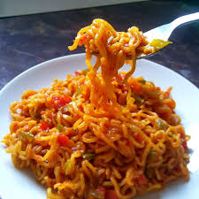

MAGGIE

description
Maggie noodles are a popular brand of instant noodles known for their quick preparation and delicious taste.
Made from wheat flour, these noodles are typically accompanied by a flavoring packet containing a blend of spices and seasonings, adding depth to every slurp.
Whether enjoyed as a convenient snack or a speedy meal, Maggie noodles are a favorite choice for satisfying hunger cravings with ease.
ingridients
- maggie raw packet
- water
- stove with sufficient gas
- maggie masala
- a bowl to serve
Steps
- Pour 1 ½ cups of water into a saucepan and bring it to a boil over medium heat.
- Once the water is boiling, break the Maggi noodle cake into four parts and add it to the boiling water.
- Let the noodles cook for 2 minutes. Stir occasionally to ensure they don't stick together.
- Open the seasoning packet that comes with the Maggi noodles and add it to the saucepan.Stir well to distribute the seasoning evenly.
- Let the noodles simmer for another 2 minutes, or until they reach your desired level of tenderness. Stir occasionally.
- Turn off the heat and transfer the noodles to a bowl.Enjoy your Maggi noodles hot.